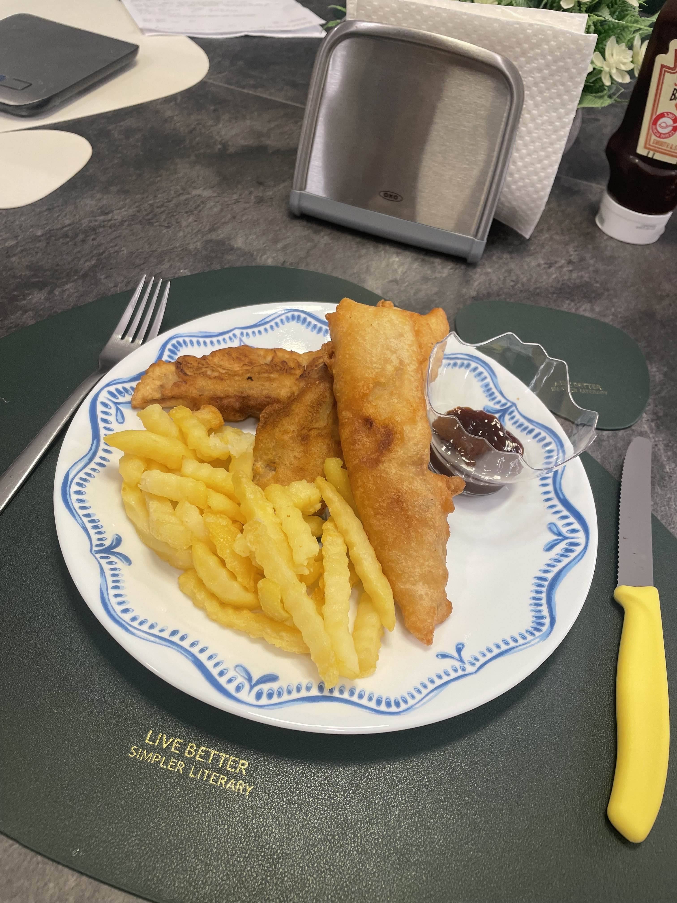

Joshua's Fish and Chips Recipe

Description
For this recipe we will be making cheap and easy fish and chips.
Alternatively you can follow along the video posted by Joshua Weissman on YouTube, where the recipe is taken from.
For the written recipe I will be skipping the tartar sauce Joshua makes.
Ingredients
For a serving size of 4 plates:
For the fish:
- Cod fillets
- 250 gr. All-purpose flour
- 1 teaspoon baking powder
- 1 teaspoon garlic powder
- 1 cup/240 ml. beer, ideally light beer
- Salt for seasoning
For the chips:
- 4 russet potatoes
- Vegetable oil for frying
Steps
For the fish:
- Cut your fish into 2.5-3 inch fillets, which should get you about 8-10 pieces. Season the fish with salt on all sides and let it sit at room temperature for 8-10 minutes to draw out the moisture.
- In a bowl, mix in all-purpose flour, baking powder, 1 teaspoon of salt, garlic powder. Whisk until combined, then slowly whisk in the beer until thick and smooth. Go slowly, as you do not want to over-whisk the batter.
- Pat your fish dry, then toss it in a bowl with plain all-purpose flour to coat it. Shake the excess flour then dunk it in the batter you made.
- Transfer the fish to your frying oil which should be around 175°C-190°C (350°F-375°F), and fry them for 2-4 minutes or until you get a golden crispy exterior.
- Fry the fish in batches, while placing the fried pieces on a drying wire rack. If you wish to add more salt or any other seasonings of your choice, do so immediately after taking the fish out and placing it on the wire rack.
For the chips:
- Bake your russet potatoes in an oven preheated to 200°C (400°F) for one hour or just until fork tender.
- For perfect crispy fries you'd want to chill these overnight in the fridge after taking them out of the oven.
- The next day cut the potatoes in half, and then into thirds or quarters depending on how thick you'd like your fries.
- Drop the potatoes into a frying pan filled with vegetable oil heated to around 180°C (360°F) and fry them in 3-4 batches until they've developed a deep golden-brown crust.